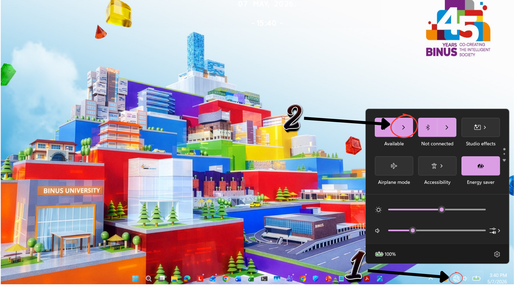
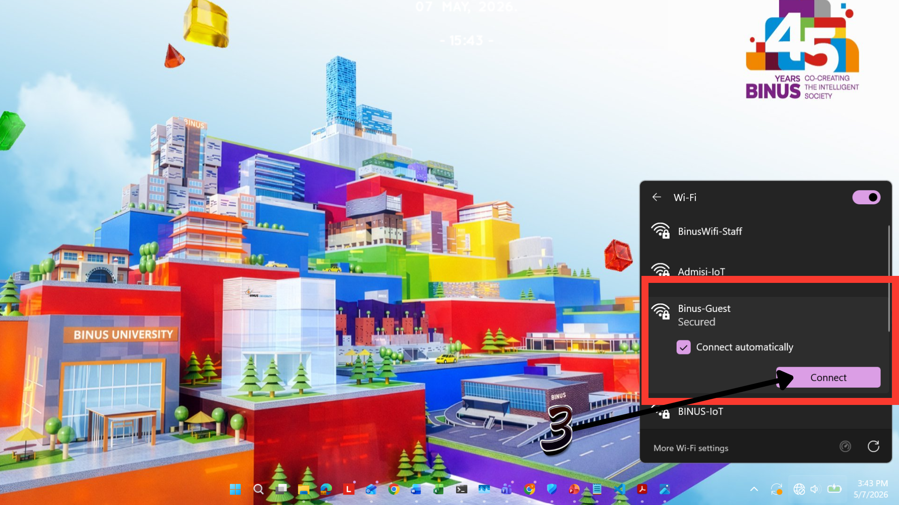
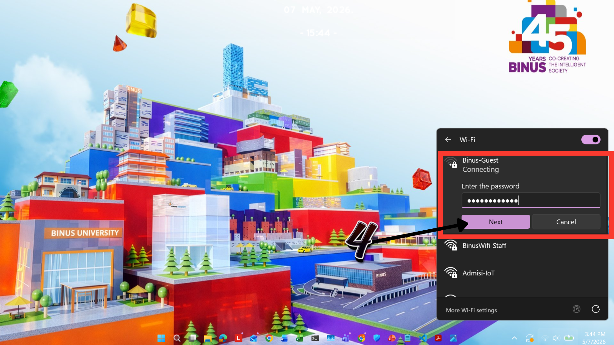

How do I connect my device to the Access Wifi?

Windows
Step 1:
Open the Wi-Fi settings on your device
Open the Wi-Fi settings on your device
Step 2:
Click Wi-Fi icon
Click Wi-Fi icon

Step 3:
Select Binus-Guest and click Connect
Select Binus-Guest and click Connect

Step 4:
Input password by scanning the barcode on the desk, then click NEXT
Input password by scanning the barcode on the desk, then click NEXT

Step 5:
Wait until the device is successfully connected to the Wi-Fi network
Wait until the device is successfully connected to the Wi-Fi network
macOS
Step 1:
Open Wi-Fi settings and select Binus-Guest
Open Wi-Fi settings and select Binus-Guest
Step 2:
Click Join/Connect
Click Join/Connect

Step 3:
Input password by scanning the barcode on the desk
Input password by scanning the barcode on the desk
Step 4:
Click Join
Click Join
Step 5:
Wait until the device is successfully connected to the Wi-Fi network
Wait until the device is successfully connected to the Wi-Fi network
Tips
- Check network connection
- Restart device if connection fails